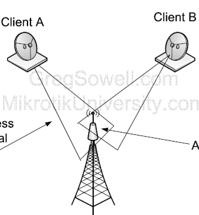
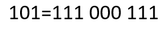

Name:
What does CPU stand for?
Central Participation Unit
Central Processing Unit
Central Processer Unit
What Abstraction involes removing actual values?
Problem abstraction
Data abstraction
Procedural abstraction
where is data in the registers stored during a system interrupt?
Cache
Stack
RAM
What is the most expensive per gigabyte type of secondary storage
Optical Disk Drive
Magnetic Storage
Solid State Drive
what is the formular ot work out the size of a music file?
Length * sample rate * sampling resolution
length /8 * sample rate
length * sample rate * frequency

what is this problem called?
twin nodes issue
double connection interferance
two nodes problem
Which of these is a network topology?
Triangle
Star
tram

What type of error checking is this a example off?
Parity bits
Majority voting
Check digits
how is a AND gate writen in boolean algebra
A + B
A-B
B~A
What type if data transfer can suffer cross talk?
Serial
Parrel
Adjacent